协同过滤
为了解决基于内容过滤的局限性，协同过滤同时使用用户之间相似和物品之间的相似来推荐。这能做到意外的推荐；因为协同过滤模型能根据和用户A类似的用户B的兴趣来给A推荐物品。此外，embeddings(怎么翻译都不好)能够被自动学习到，不依赖于手工进行特征工程。
一个电影推荐示例
一个电影推荐系统的训练数据集是由一个反馈矩阵组成，这个矩阵：
- 每一行表示一个用户
- 每一列表示一个物品(电影)
关于电影的反馈有两种类型 - 显式— 用户通过一个数字评分来表示对一个特定电影的喜爱程度
- 隐式— 如果一个用户观看了一个电影，系统推断用户对这个电影感兴趣
如果用户访问主页，系统就应该同时根据下面两点给出推荐 - 和用户过去喜欢的电影相类似的电影
- 和用户类似的用户喜欢的电影
为了方便解释，我们在下面的表格中为每个电影手工创建了特征
| 电影 | 评分 | 描述 |
|---|---|---|
| The Dark Knight Rises | PG-13 | Batman endeavors to save Gotham City from nuclear annihilation in this sequel to The Dark Knight, set in the DC Comics universe. |
| Harry Potter and the Sorcerer’s Stone | PG | A orphaned boy discovers he is a wizard and enrolls in Hogwarts School of Witchcraft and Wizardry, where he wages his first battle against the evil Lord Voldemort. |
| 怪物史莱克 | PG | 一个可爱的食人魔和他的驴伙伴出发去营救菲奥娜公主，她在她的城堡里被一条龙报复。 |
| The Triplets of Belleville | PG-13 | When professional cycler Champion is kidnapped during the Tour de France, his grandmother and overweight dog journey overseas to rescue him, with the help of a trio of elderly jazz singers. |
| Memento | R | An amnesiac desperately seeks to solve his wife’s murder by tattooing clues onto his body. |
1D(1维) Embdding
假设我们给每个电影赋一个[-1,1]的值来描述这个电影是适合儿童(-1)还是成人(1)。同时我们给每个用户赋一个[-1,1]的值来描述这个用户是喜欢儿童电影(接近-1)还是成人电影(接近+1)。
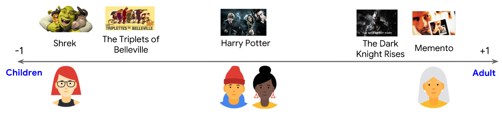
下图中，绿色勾代表这个用户看过对应的电影，第3个和第4个用户的爱好能很好的通过这个特征来表示-第3个用户喜欢儿童电影，第4个用户喜欢成人电影(只是翻译，不要想歪了)。但是第1个和第2个用户的爱好不能通过这种单个特征来表示。
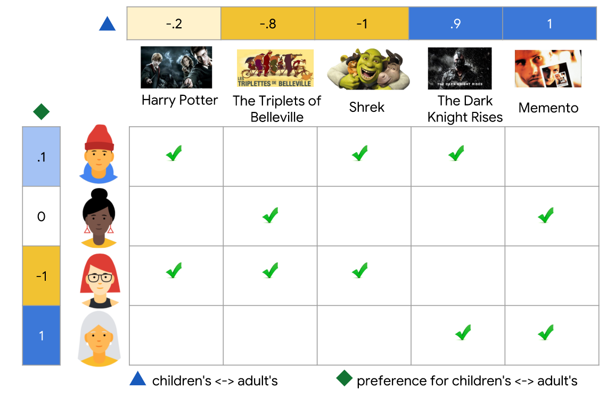
2D(2维)Embedding
一个特征不足以表示所有用户的偏好。为了解决这个问题，我们增加一个特征，一个表示大片或者艺术电影的程度。有了这第二个特征，我们能使用下面的二维embedding来表示每一个电影。
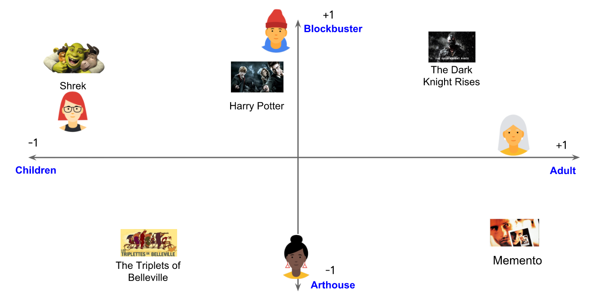
我们同样把用户放入相同的embedding空间中来表示反馈矩阵：每一用户、物品对，我们希望当用户看了该电影时，用户embedding和物品embedding的点积接近1，没看则点积接近0。
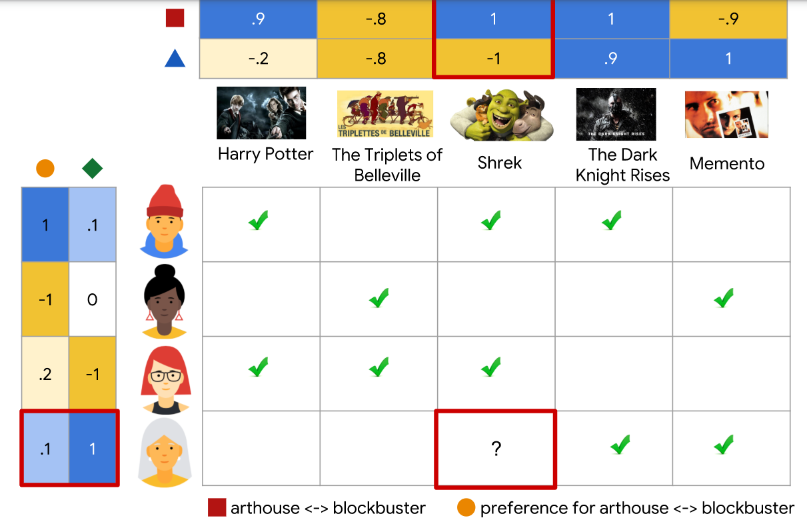
注意：我们使用相同的embedding空间来表示用户和物品。这看起来很奇怪。毕竟用户和物品是不同的实体。但是你可以认为这个embedding空间是用户和物品的共性的一种抽象表示，这样我们就可以使用相似度量来衡量相似度或相关性。
在这个例子中，我们使用手工创建的embedding。但是实际上，embedding能被自动学习，这就是协同过滤的能力。在下面2节中，我们会讨论用不同的模型来学习并训练embedding。
当模型学习embeddings时，这种协同的方法是很显然的。假设电影的embedding向量是固定的，然后模型就能学习到能最佳表示用户偏好的embedding向量。因此，用户的embedding越相似表名他们更偏好更接近。同样的，如果用户的embedding向量是固定的，我们也可以学习电影的embedding来很好的表示反馈矩阵。结果就是，被相似用户喜欢的电影的embedding在embedding空间也更接近。
检查下你是否理解了
一个模型推荐一个购物app给用户，因为这个用户最近安装了一个类似的app。这个例子是一个什么过滤？
1、基于内容的的过滤
答案正确。基于内容的的过滤不考虑其他用户。
- 2、协同过滤
答案错误，协同过滤考虑到其他用户，这个场景中，我们只考虑了一个用户。
矩阵因子分解
矩阵因子分解是一个简单的embedding模型。给定一个反馈矩阵
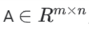,m表示用户的数量，n表示物品的数量。这个模型能学习到：
- 一个用户embedding 矩阵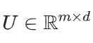，第i行表示用户i的embedding
- 一个物品embedding矩阵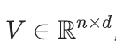，第j列表示物品j的embedding
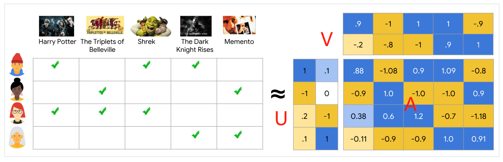
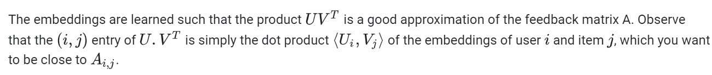
学习到的embedding使得U和V两个矩阵的乘积能非常接近反馈矩阵A。注意到矩阵U和矩阵V乘积的每个实体(i,j)就是用户i的embedding和物品j的embedding的点积。你希望这个点积和A(i,j)更接近。
注意：矩阵因子化代表性的给出了一个更加简洁的表示而不是学习整个矩阵。完整的矩阵是O(m*n)个实体，而embedding矩阵U和V只有O((m+n)d)个实体，d是embedding的维度，embedding维度d是远小于m和n的。因此，矩阵因子分解能学习数据的因此结构特征，可以认为是一个低维空间的观察。在前面的例子中，m，n，d的值都非常小，这个优势可以忽略。但是在实际的推荐系统中，矩阵因子分解是比学习整个矩阵要极度简化。
选择目标函数
一个最直观的目标函数就是平方距离。就是最小化所有观察条目对的平方差之和。
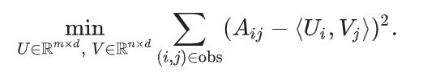
在这个目标函数中，你只对那些反馈矩阵中不为0的观察对象(i,j)进行平方差求和。但是，仅对值为1的求和不是一个好办法，因为所有值为1的会有最小的损失(loss)，也会导致生成的模型不能进行有效的推荐且不具备一般性的模型。
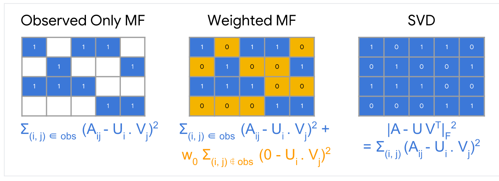
你也可以把那些没有观察到的值也就是用户没有进行评分的值当做0处理，然后对矩阵中所有的单元格进行求平方差的和。这也就是最小化矩阵A和UV^T之间最小的平方 Frobenius距离。
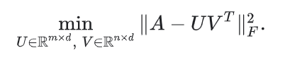
你可以通过奇异值分解来解决矩阵的二次方程的问题。但是，奇异值分解(svd)也不是一个好的方案。因为在实际的应用中，矩阵A可能会很稀疏，例如，一个用户在youtube上看的所有视频相比youtube上所有视频总数来说是非常的少。解决方案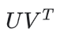(对应到输入的评分矩阵)会接近于0，也会导致模型的性能很差。
相反，权重的矩阵因子分解把目标分解为下面2个求和项
- 所有观察值(有用户评分)的求和
- 所有未观察的值求和(当做0处理)
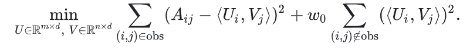
这里，W0是一个超参数，控制公式中的两个term(有评分的求和无评分的求和)权重，保证目标不为被任何一个term主宰。调整这个超参数非常的重要。
Note：在实际的应用中，你需要小心设置观察值的权重。例如，频繁的物品（youtube中非常流行的video视频）或者高频访问的用户会主导并控制了这个目标函数。我们可以通过设置训练数据集的权重来表达物品的频繁度，从而纠正这个问题。换句话说，你可以把目标函数替换为：
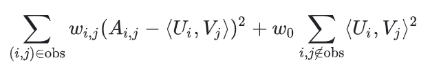
其中w(i,j)是用户i和物品j的频繁度的函数。最小化目标函数
比较流行的最小化目标函数的算法有 - 随机梯度下降SVD是最小化损失函数的通用方法
- 交替最小二乘法Weighted Alternating Least Squares (WALS)是专门为这类目标设计
这个目标在两个矩阵U和V中都是二次方程式的（Note, however, that the problem is not jointly convex这个我也不懂）交替最小二乘法WALS通过随机初始化embeddings，然后交替下面两项
- 固定U，然后求解V
- 固定V，然后求解U
每一个阶段都能被完全解决(通过线性系统方案)并且能分布式执行。因为每一步都能降低loss损失，所以这个技术能保证目标收敛。
SGD VS. WALS
SGD随机梯度下降和WALS交替最小二乘法都有优势和劣势。下面是他们之间比较
SGD
- 非常灵活，能应用于其它的损失函数
- 能够并行
- 很慢，不能很快的收敛
- 很难处理那些未观察的值(need to use negative sampling or gravity)
WALS
- 依赖于方差损失
- 能够并行化
- 比SGD更快收敛
- 很容易处理未观察的值
优势和劣势
优势
不需要领域知识
我们不需要领域知识， 因为embeddings能被自动学习到
意外发现（Serendipity）
模型能帮助用户发现新的兴趣。在互相隔离的情况下，机器学习系统可能不知道用户对某一个物品感兴趣，但是依然会推荐它，因为相似的用户对这个物品感兴趣。
一个很好的起点(Great Starting point)
某种程度上，这个系统只需要用户反馈矩阵就可以训练矩阵因子分解模型。特别的，系统也不需要上下文特征。实践中，这是多种推荐物品候选生成器的一种。
劣势
不能处理新物品
预测这个模型中的一个用户、物品对就是他们对应的embeddings的点积。如果在训练时都没有这个物品，那么就不能为这个物品生产embedding，也就不能为用户推荐这个物品。这个问题通常被称为冷启动问题。但是，下面的技术能在某种程度上解决这个问题
- Projection in WALS .如果一个新的item没有模型训练中出现，假设系统中有用户和这个物品有交互，那么不需要重新训练整个模型也可以轻松的给这个物品计算embedding 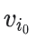。系统只需要计算下面的等式或者一个加权重的版本
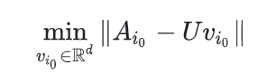
上面的等式对应WALS中的一次迭代：用户的embeddings保持固定，系统求解物品i(0)的embedding，对于新的用户也可以使用相同的方法来解决。 - 为新物品启发式的生成embeddings（Heuristics to generate embeddings of fresh items）如果系统中没有用户和这个新物品交互，那么系统会取一些物品的embeddings的均值。这些物品和新物品是属于同一类型，同一上传者(在youtube),其它以此类推。
很难为用户或物品包含侧面特征(Hard to include side features for query/item)
Side Feature侧面特征就是超出用户和物品之外的特征。对电影推荐来说，侧面工程可能包含国家、年龄。包含已存在的侧面特征能提升模型的质量。但是，在WALS中添加侧面特征可并不简单。一个一般化的交替最小二乘WALS使得这成为可能。
为了一般化交替最小二乘WALS，我们需要定义一个块矩阵A，其中 - Block (0, 0) is the original feedback matrix .块(0,0)是原始反馈矩阵
- Block (0, 1) is a multi-hot encoding of the user features.
- Block (1, 0) is a multi-hot encoding of the item features.
注意：Block (1, 1)通常被置空。如果你对反馈矩阵A应用矩阵因子分解，那么系统除了会学习用户和物品的embedding，也会学习侧面特征的embedding。
本文翻译自谷歌开发者文档：Collaborative Filtering and Matrix Factorization

...
...
This is copyright.